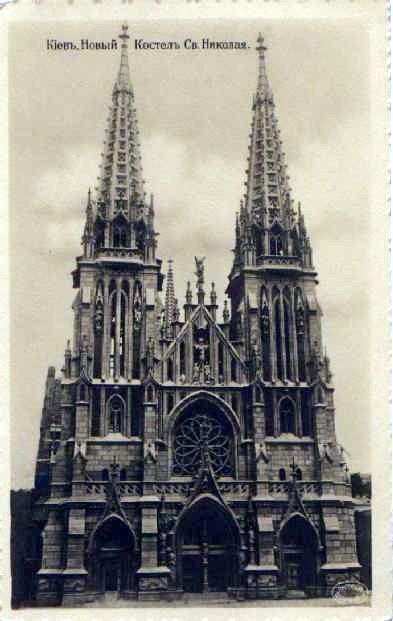

Постройка костёла Св. Николая началась по конкурсному проекту архитектора С. В. Валовского в 1899 году. Разработка и строительство здания производились под руководством известного киевского архитектора В. В. Городецкого. Костёл, построенный в стилизованных готических формах с высокими стрельчатыми башнями и шпилями, отличается стройными пропорциями, лёгкостью, ясностью композиционной структуры. Сложные условия строительства и архитектурного решения побудили архитекторов применить новаторские на то время инженерные технологии. Инженером А. Э. Страусом впервые в тогдашней строительной практике была предложена закладка фундамента на бетонных сваях, а в конструкциях широко использовался железобетон — новый строительный материал. Костёл был богато украшен как настенными росписями, так и витражами, которых насчитывалось 40 (не сохранились). В 1909 году костёл был освящён. Храм был закрыт и разграблен около 1933 года, духовенство подверглось репрессиям. В здании разместились склады. В 1943 году, во время войны, храм сильно пострадал от артиллерийского обстрела, горел. В послевоенные годы здание костёла было частично отреставрировано и перестроено под нужды Киевского государственного областного архива. В 1978 году было принято решение Совета Министров УССР о создании в Киеве Республиканского Дома органной и камерной музыки и о переоборудовании под концертный зал помещения бывшего Николаевского костёла. Одновременно с реставрацией проводилась и частичная реконструкция здания. С 1980 года Николаевский костёл стал функционировать в качестве концертного зала Дома органной и камерной музыки (ныне Национальный дом органной и камерной музыки Украины).
Орган киевского Дома органной и камерной музыки был специально создан мастерами фирмы «Rieger-Kloss» в городе Крнов в Чехословакии. У органа 55 регистров, распределённых по трём мануальным и педальной клавиатурам, 3945 труб различных диаметров и длины (от 13 миллиметров до 6 метров), сделанных из металла и дорогих пород дерева (использовалось чёрное и красное). Инструмент имеет широкую тембровую палитру, на нём с успехом исполняются произведения различных стилей и направлений — от старинной музыки до современных авторов. При конструировании максимально учитывалась органичность сочетания форм инструмента с интерьерами бывшего Николаевского храма. Орган, создававшийся не для действующего храма, а для концертного зала, расположен нетрадиционно: не на хорах, а в алтарной части собора, превращённой в сцену. А в ближайшее время ожидается новый дом органной музыки
Творческий коллектив Дома органной и камерной музыки составляют: Ансамбль классической музыки имени Б. Лятошинского, трио «Рависан», квартет имени Лысенко, камерные ансамбли «Киев» и «Киев-Брасс», органисты, солисты-инструменталисты и певцы.
Римско-католическая община храма, сложившаяся в начале XX века, сильно пострадала во времена событий 1917 года, репрессий 30-50-х годов XX века и практически исчезла к середине века. Возрождение церковной жизни общины началось в конце 80-х годов XX века. С 1992 года в храме начали регулярно проводиться богослужения, чередующиеся по договорённости с концертной деятельностью Дома органной музыки. Однако само здание, внесённое в список сооружений, не подлежащих возвращению религиозным объединениям, принадлежит государству. 25 июня 2001 года костёл посетил папа римский Иоанн Павел II. В 2003—2006 годах настоятелем костёла был Радослав Змитрович, Миссионеры-облаты Непорочной Девы Марии.
Состояние здания храма внушает серьезные опасения: трескаются стены, осыпаются скульптурные украшения, другие детали декора и т. п., вокруг здания установлены таблички, предупреждающие посетителей об опасности, перед входом возведен навес. Причины бедственного положения — не столько возраст строения (которому больше ста лет), сколько повышенная влажность грунтов в этой местности, изменение уровня грунтовых вод ввиду строительства по соседству с костёлом крупных зданий, вибрация от поездов метрополитена, явственно ощущаемая в помещениях, а также неудовлетворительное состояние фундамента, крыши и фасадной облицовки. Министр культуры, молодежи и спорта Владимир Бородянский 10 февраля 2020 года сообщил, что на реставрацию фасадов здания костела св. Николая — памятника архитектуры национального значения, в котором расположен Национальный дом органной и камерной музыки Украины, «в государственном бюджете на 2020 год запланировано около 50 млн грн». Однако для спасения памятника требуется не косметический ремонт фасадов, а по меньшей мере капитальный ремонт, что требует гораздо более значительных затрат. 4 сентября 2021 года в костёле святого Николая произошел пожар. Полностью сгорел уникальный орган, который был сделан из металла и дорогих пород дерева (использовалось чёрное и красное).
назад